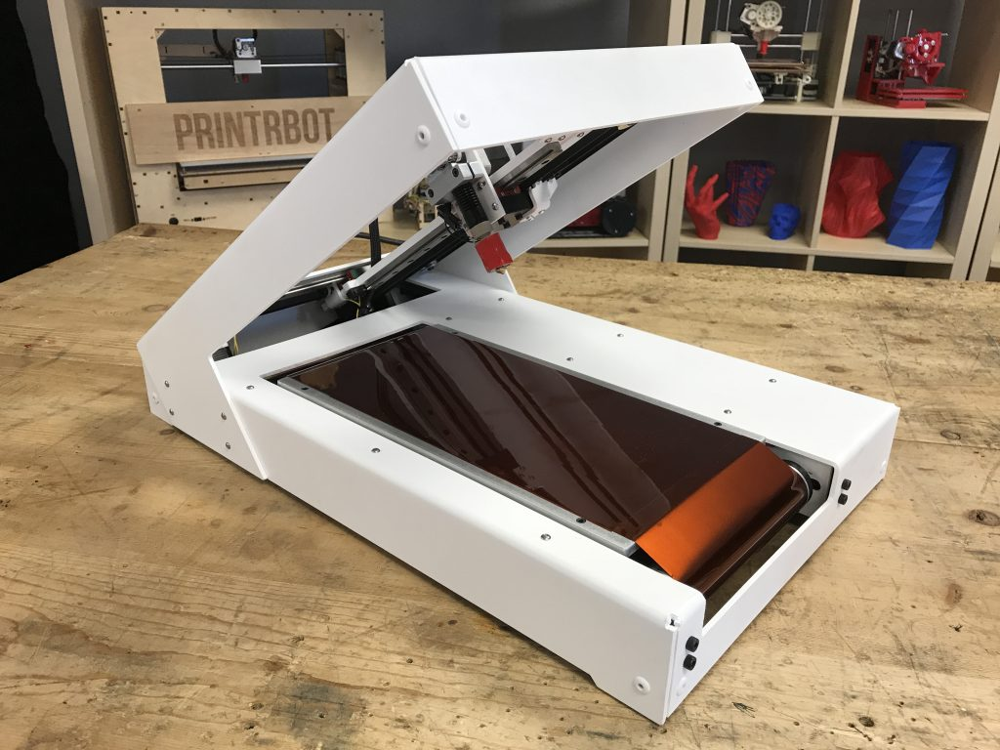

| Keramikdruck |
Delta WASP
20 40 |
Bauraum: 400*200*200mm
Der Keramik-Extruder wurde durch das Majolika 4.0 Projekt
verbessert und ausgetauscht.
Druck verschiedener Materialien durch Austausch des Extruders
möglich |

WASP Delta 20 40 3D-Drucker Quelle:
personalfab(10.10.2017)
|
|
|
| |
|
Seriendruck |
Blackbelt 3D-Drucker
|
Bauraum 340x340mm
Schräg eingebaute Z-Achse
Objekte werden direkt
auf das Förderband gedruckt
Entwickelt für Kleinserienproduktion
Das Förderband ist kurz vor Ende abgeschrägt, dadurch lösen sich die
Druckobjekte vom Förderband |
 |
Quelle:
|
|
| |
|
Seriendruck |
Printrbot 3D-Drucker
|
Bauraum 152x152mm
Nach dem Modell des Blackbelt entwickelt
Entwickelt
für Kleinserienproduktion
Das Förderband ist kurz vor Ende abgeschrägt,
dadurch lösen sich die Druckobjekte vom Förderband
Förderband kann bei
Bedarf beheizt werden
Enthält Software welche die einzelnen Druckaufträge
aneinander reiht
Z-Achse endlos |

Quelle:
kickstarter(27.09.2017)
|
|
| |